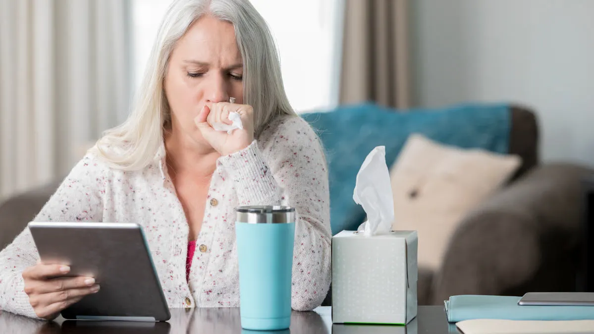

What To Do If You Think You Have It
If you show symptoms of:
A Fever
Coughing (similar to the flu)
Sore Throat
Fatigue
Shortness Of Breath
Or if you have been in contact with anyone who may have Coronavirus, ie. someone who has come back from
a trip of some sort where they may have come in contact with someone with COVID, if you have gone to a
gathering of people such as a mall where someone with COVID has also attended as well. You should contact
1800 020 080, which operates 24/7 and will advise you on what to do about it. You can also call
this number if you have any questions about the virus as well. It is also adviced that you get tested at your
local COVID testing clinic to determine whether or not you have the virus.
If you believe you should see a doctor, call ahead of time to book an appointment.
You will be asked to take precautions when you attend for treatment. Follow the instructions you are
given.
If you have a mask, wear it to protect others. Stay at least 1.5 metres away from other people. Cover
your coughs or sneezes with your elbow.
Tell the doctor about:
Your symptoms
Any recent contact with someone who may have it
Your doctor will tell you if you should be tested. They will arrange the test for you.
It will take a few days until the results come back.
If you have serious symptoms you will be kept in hospital and isolated from other patients to prevent
the virus spreading.
If your doctor says you are well enough to go home while you wait for your test results, you should
self-isolate at home and do not attend work or school.
Apple has also created a
website which can decide whether you may have coronavirus and whether or not you should see a
doctor for a test.

What To Do If You Do Have It
If you do have coronavirus and the test comes back positive for it, you need to self isolate and stay at home. If you really need to go outside then make as many precautions as possible, where a mask and attempt to distance yourselves away from others as much as possible. If this is not done there is a large possibility that the virus will spread among your community if it is currently unvaccinated, there is also a possibility that the virus will spread to someone at risk, potensially resulting in their death.
